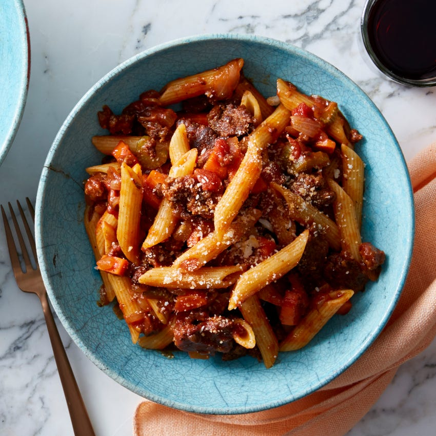

How to make Bolognese
On this page you will be learning how to make bolognese that can go with any meat or pasta of your choosing. For your ingredients you will need:
For the sauce
2 Cans of Tinned (or fresh) tomatoes
1 large (or 2 medium) White onion(s)
2 Cloves of garlic
1 tsp of Basil
1 tsp of Oregano
2 bay leafs
1 Stick of celery
1 beef stock cube
For the meat
500g of Minced meat of your choosing (beef, pork, chicken, etc.)
2 chopped carrots (optional)
Chopped mushrooms(optional)
1 tbsp of Tomato puree
1 tbsp of Olive Oil